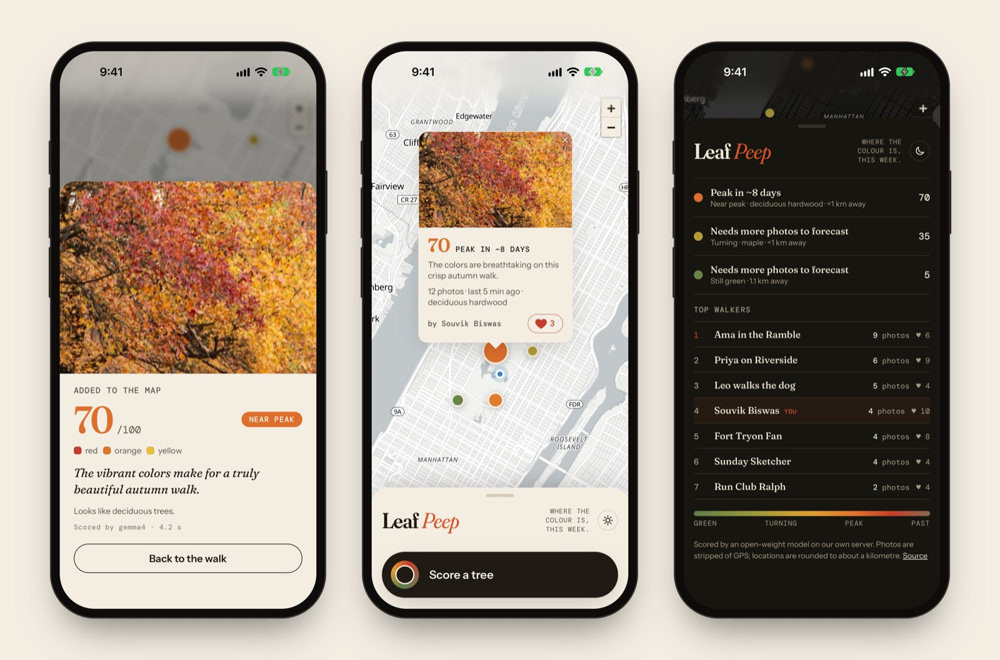
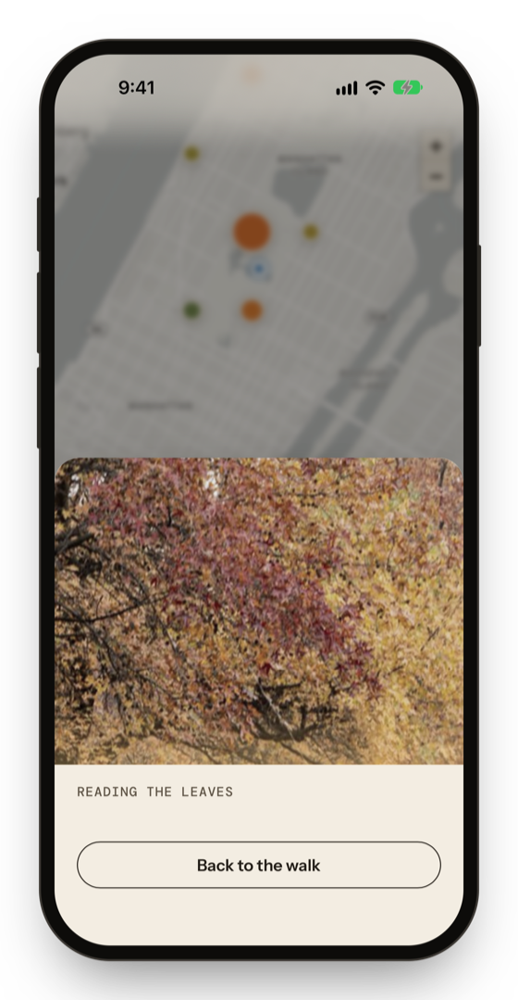
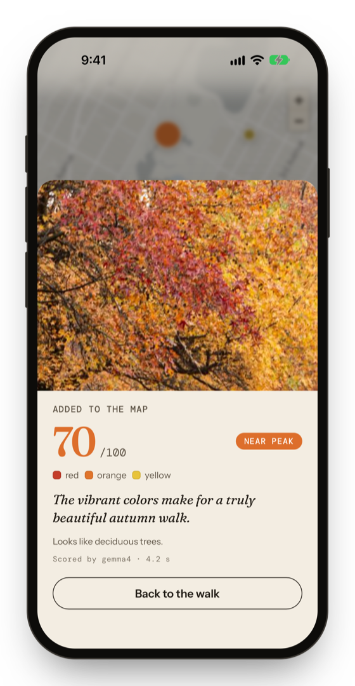
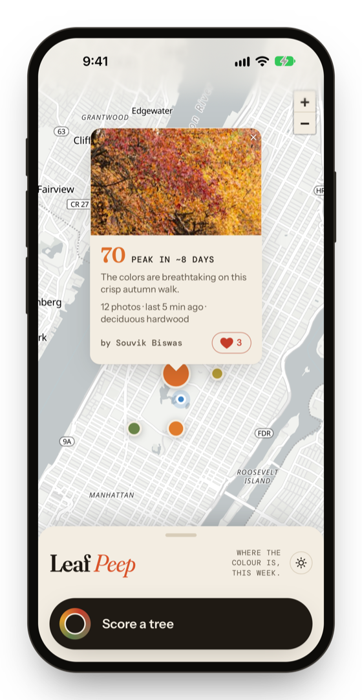
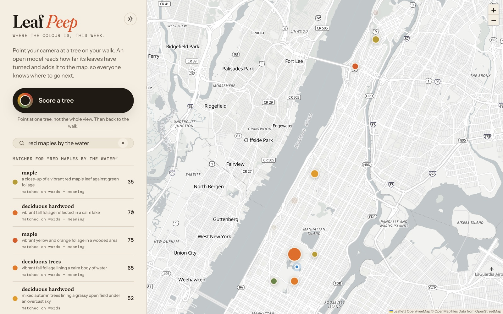
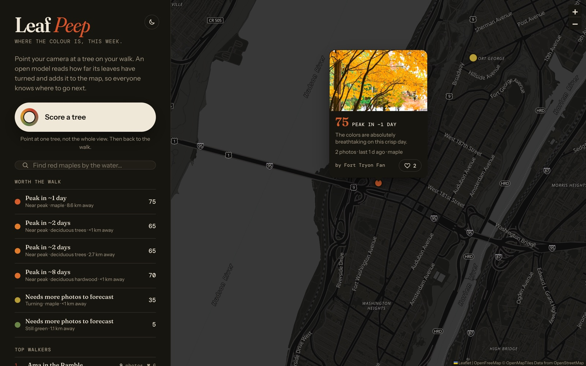
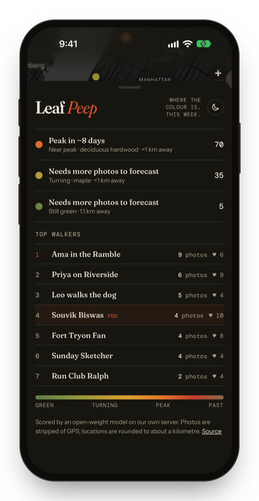

Snap a tree on your walk. Gemma 4 reads how far its leaves have turned, and it lands on a shared map of where fall colour is peaking this week.


01Point your phone at a tree. Gemma 4, an open-weight vision model, reads the photo in a couple of seconds.

02A 0–100 colour score and a stage (green → turning → peak → past), the colours it sees, and a guess at the tree.

03The spot lands on the map for everyone. A daily history per spot turns into a forecast: “peak in about a week”.
“Red maples by the water” finds the sugar maples on the lakeshore even though no one typed “water”. An open embedding model (MiniLM) and pgvector rank by meaning, Postgres full-text ranks by words, and the two are fused with reciprocal rank fusion.

Scores every photo against a JSON schema. DigitalOcean serverless inference in production, Ollama on a laptop.
One Droplet runs the app, Caddy HTTPS and the database. deploy/up.sh to launch, down.sh to stop billing.
A hypertable and continuous aggregate power the forecast. pgvector and full-text power hybrid search.
Photos are re-encoded so GPS is stripped. Locations are rounded to a ~1 km cell before anything is stored.


Run it on a laptop with Ollama and Docker, or put it on a $12/month DigitalOcean Droplet with one command.
# the open model ollama pull gemma4 # Tiger Data's TimescaleDB with pgvector docker run -d -p 5433:5432 -e POSTGRES_PASSWORD=leafpeep \ -e POSTGRES_DB=leafpeep timescale/timescaledb-ha:pg17 # the app npm install && npm run dev # → localhost:8080